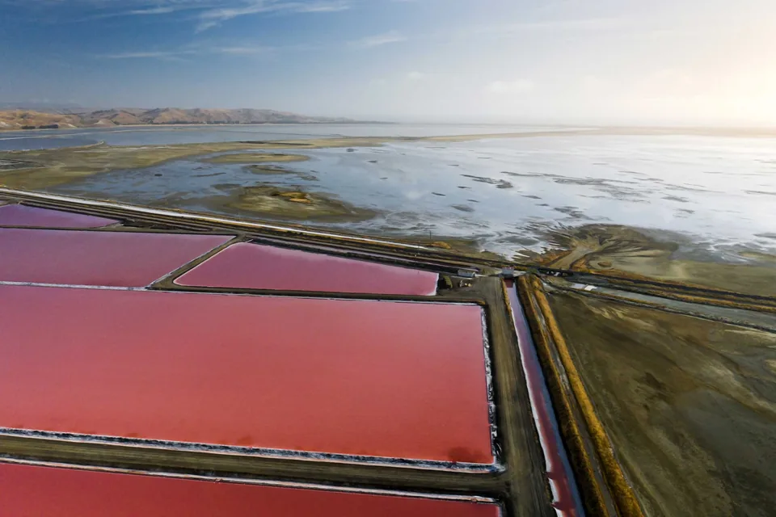
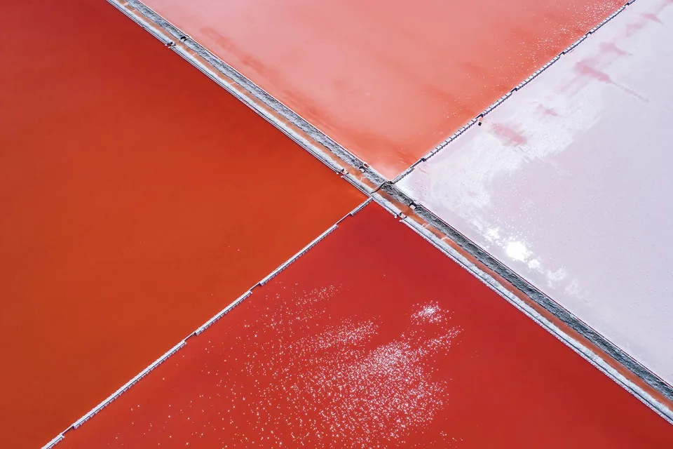
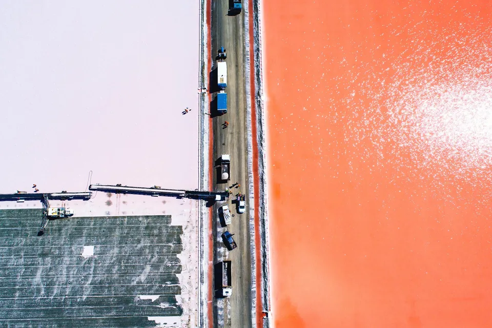
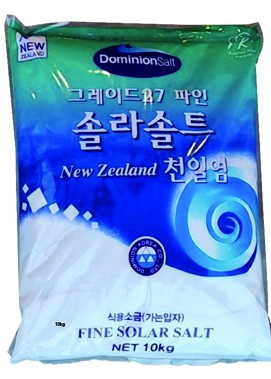

THE SALT JOURNEY
바닷물이 고운 소금이
되기까지
바닷물을 농축해 결정을 키우는 일과, 그 결정을 고운 식용 소금으로 가공하는 일. 뉴질랜드 레이크 그래스미어 염전의 실제 사진으로, 바다에서 포장까지의 공정을 따라갑니다.
-
01 / 산지
뉴질랜드 남섬,
레이크 그래스미어바다와 맞닿은 평지에 염전이 펼쳐집니다. 긴 일조 시간과 건조한 북서풍 덕분에 바닷물을 증발시키기에 알맞은 곳입니다. Dominion Salt가 이곳을 소금 생산지로 선택한 이유입니다.

레이크 그래스미어 · 염전 항공 전경 -
02 / 취수 · 농축
바닷물은 여러 농축지를
차례로 지나갑니다바닷물을 큰 저수지로 끌어들입니다. 햇빛과 바람으로 물이 증발해 염도가 높아지면, 여러 농축지로 옮겨 다시 증발시킵니다.
이 과정을 거치며 바닷물은 소금 결정이 맺힐 수 있는 농도의 염수가 됩니다.

레이크 그래스미어 · 바다와 맞닿은 염전 
레이크 그래스미어 · 바닷물 증발지 -
03 / 결정화
결정지 바닥에
소금이 쌓입니다충분히 농축된 염수를 결정지로 옮깁니다. 물이 더 증발하면서 소금이 바닥에 굳은 층을 이룹니다. 레이크 그래스미어의 소금 생산철은 보통 10월 초에 시작해 약 6개월 이어집니다.

레이크 그래스미어 · 결정지와 현장 설비 -
04 / 수확 · 1차 세척
결정을 거두고,
염수로 한 번 씻습니다보통 3월 초부터 결정지에 남은 염수를 빼고, 바닥에 굳은 소금층을 장비로 들어 올립니다. 수확은 대개 4~6주에 걸쳐 진행됩니다.
거둔 소금은 세척 시설로 옮겨 염수로 씻고, 이후 가공에 쓸 수 있도록 쌓아 보관합니다. 여기까지가 염전에서 수확한 소금이 가공으로 넘어가기 전의 과정입니다.

레이크 그래스미어 · 염전 작업로 -
05 / Grade 27 가공
수확한 결정에서
고운 입자로태장이 소개하는 Grade 27 Fine Solar Salt는 수확한 소금을 고운 입자의 식용 제품으로 가공한 천일염입니다. 분쇄와 재세척을 거친 뒤 가마에서 건조하고, 체로 필요한 입자 크기를 골라 포장합니다.
- 분쇄 · 재세척
수확한 결정을 잘게 부수고 다시 씻습니다.
- 가마 건조
세척을 마친 소금을 가마에서 건조합니다.
- 체 선별
체를 사용해 고운 입자를 골라냅니다.
- 포장
선별을 마친 소금을 공급 규격에 맞춰 담습니다.
- 분쇄 · 재세척
DOMINION SALT / 생산 거점
한 제조사,
두 곳의 생산 거점
Dominion Salt는 레이크 그래스미어 염전과 마운트마웅가누이 정제 시설을 운영합니다. 이 사진은 레이크 그래스미어의 수확 현장이 아닌, 마운트마웅가누이의 소금 야적장입니다.

DOMINION SALT / 연혁
한 장의 기록 사진이
보여 주는 시간
레이크 그래스미어 염전에서 쓰이던 수확 설비의 기록입니다. 지금의 생산 현장은 앞에서 본 컬러 사진으로, 이 염전의 시작은 아래 연혁으로 확인할 수 있습니다.

- 염전의 시작
조지 스켈러럽이 뉴질랜드 남섬 레이크 그래스미어에 소금 생산 거점을 마련했습니다.
- Dominion Salt 법인 설립
5월에 법인을 설립하고, 레이크 그래스미어의 소금 생산을 이어 갔습니다.
- 두 번째 거점 선정
늘어나는 수요에 대응하기 위해 북섬 마운트마웅가누이에 추가 가공 시설 부지를 정했습니다.
사진 Dominion Salt · 증발지·결정지·작업로 촬영 JTP©
공정 자료 레이크 그래스미어 염전 안내 · Grade 27 제품 안내 · Dominion Salt 연혁
Grade 27 Fine Solar Salt
5kg · 10kg · 25kg
가는 입자의 뉴질랜드 천일염입니다. 사용량과 보관 여건을 기준으로 포장 규격을 선택하고, 공급 조건은 태장에 문의해 주세요.


사진은 10kg·25kg 포장 예시입니다. 실제 포장 디자인은 공급 시점에 따라 달라질 수 있습니다.
- 제조원
- Dominion Salt Limited
- 국내 판매원
- 태장 주식회사
- 자회사형 장애인 표준사업장 · 제2026-049호
제품 표시·인증
제품 라벨과 규격
25kg 참고 라벨의 원재료 표기는 Salt입니다. 용량별 제품 표시사항은 실제 공급 제품 라벨을 기준으로 확인해 주세요.
제조원 등록·인증 자료
- 뉴질랜드 식품법 등록 · National Programme Level 3 (마운트마웅가누이·레이크 그래스미어 사업장)
- 할랄 인증 · FIANZ (마운트마웅가누이 사업장, 인증 범위에 Solar Salt 포함)
사업장 단위 등록·인증입니다. 적용 범위와 유효기간은 사본으로 안내합니다.
천일염 납품·견적 문의
기업·기관 납품 문의는 필요한 규격, 수량, 수령 지역부터 알려 주세요. 제품 라벨이나 제조원 관련 자료가 필요하다면 함께 적어 주세요.